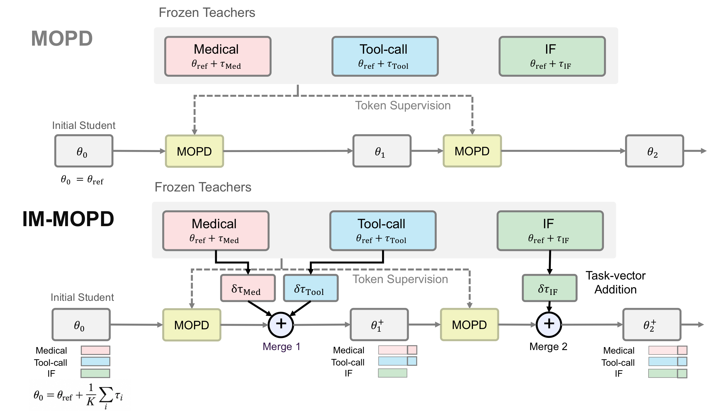
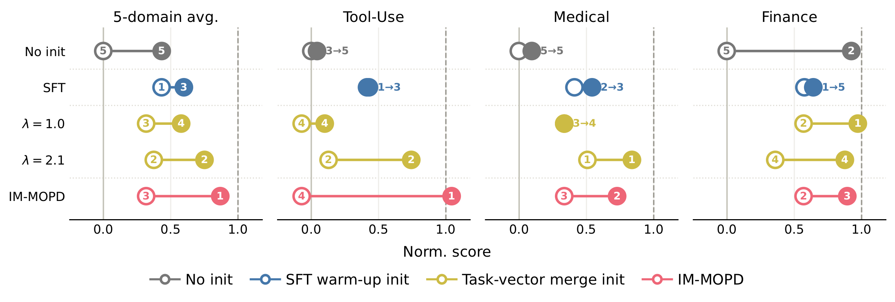
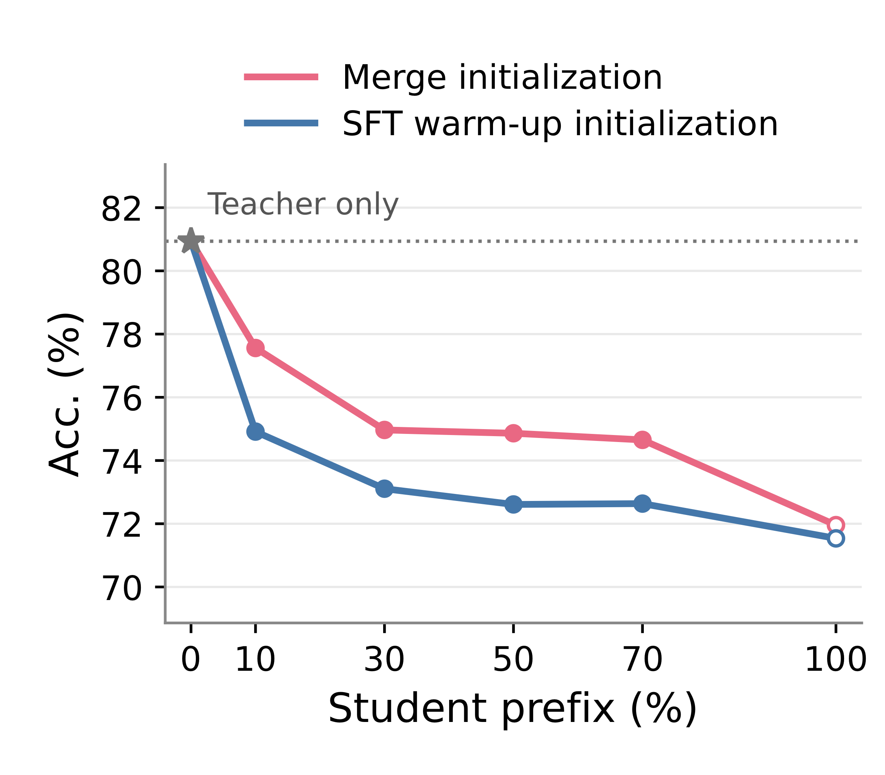
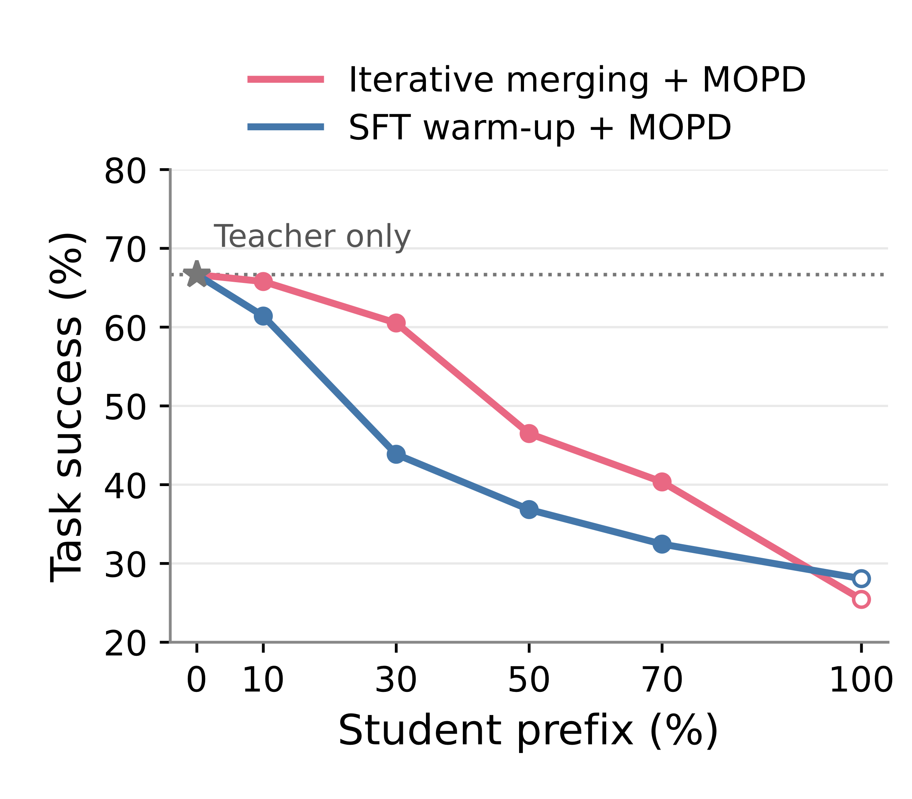
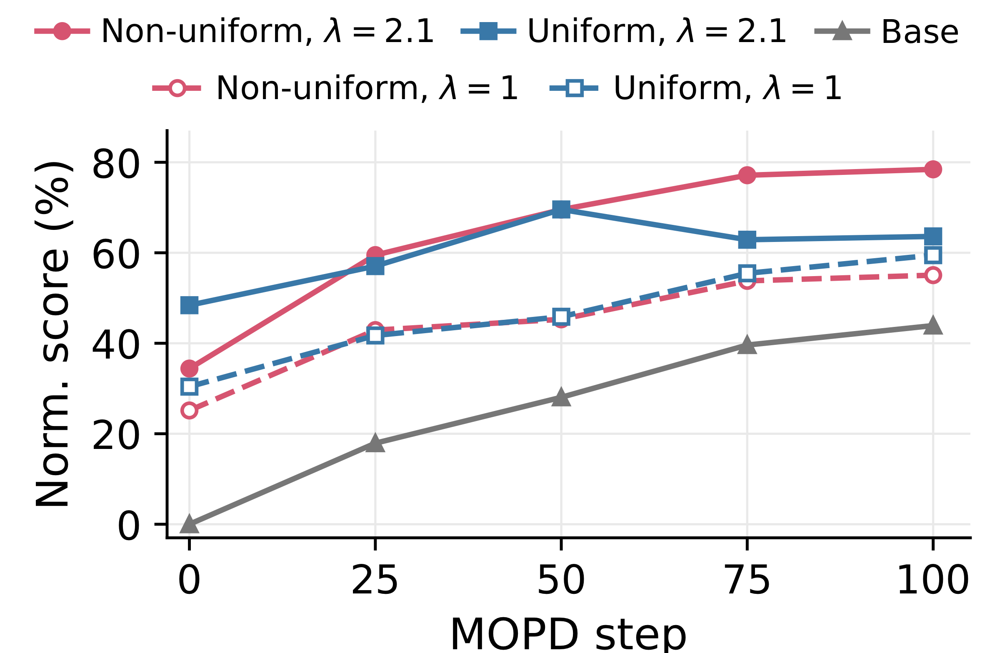

News
- 2026.09.29Paper released.
Overview
Building a unified language model requires integrating capabilities acquired through different data and training procedures. Different domains often benefit from different post-training recipes such as SFT, RL, or their combinations, making a modular workflow of independent specialization and subsequent integration attractive. Multi-teacher on-policy distillation (MOPD) supports this workflow: each domain teacher provides token-level supervision at the prefixes generated by the student.
However, MOPD can struggle when teachers have very different post-training histories, even when they share the same reference model. Because distillation occurs on student-generated prefixes, the student's initialization can strongly affect what MOPD is able to recover.
We propose IM-MOPD (Iterative Merging for MOPD): start from a uniform merge of teacher task vectors, and during distillation, periodically add fixed task-vector increments for domains whose recovery still lags. This replaces a continuous per-domain coefficient search with repeated merge-or-not decisions, letting both the relative domain weights and the total task-vector contribution evolve together with the student.
Observations
We study a setting where all teachers originate from a shared reference model θref and are independently specialized through SFT or RLVR before being integrated via MOPD. Let si(θ) denote the score of model θ on domain i. We report the normalized score s̃i(θ) = [si(θ) − si(θref)] / [si(φi) − si(θref)], anchoring the reference model at 0 and the domain teacher at 1.
Obs. 1Merge initialization is an effective starting point for MOPD
MOPD from the shared reference model struggles to recover the SFT-trained Medical and Tool-Use teachers, while approaching teacher-level performance on the RL-trained Finance teacher. This uneven recovery indicates that student initialization strongly affects how effectively different teacher capabilities transfer. SFT warm-up partially helps but adds a training stage and requires designing a mixed-domain data mixture and schedule.
We find that simply initializing the student by merging teacher task vectors, with θ0 = θref + Σi αi τi and τi = φi − θref, substantially improves subsequent MOPD recovery without requiring additional training.

Obs. 2A stronger student is not necessarily a better MOPD initialization
In the figure above, SFT warm-up yields higher initial performance than a scaled merge initialization (λ = 2.1) on Tool-Use, yet the ordering reverses after MOPD. IM-MOPD reaches the highest final recovery despite not starting from the strongest benchmark score.
The same pattern appears for merge interventions during training: from a shared MOPD checkpoint, adding a task-vector merge can temporarily reduce normalized performance, but after 50 more MOPD updates the intervened branch is higher than the branch that skipped the intervention. Immediate benchmark performance therefore does not fully characterize a good state for subsequent MOPD.
A prefix-level view corroborates this. Evaluating how well each frozen teacher can continue from prefixes generated by different students, we find that teachers score higher when continuing from merge-generated prefixes than from SFT-warm-up prefixes, even when the merged student itself scores similarly or worse on the benchmark.


Obs. 3Coefficient search gets harder as domains grow: both ratio and scale matter
Even with two domains (Medical, IF), a coefficient sweep produces very different post-MOPD trade-offs, and the best initialization by average normalized score is not the best after MOPD. Evaluating a candidate therefore requires simulating the learning it enables, not just inspecting the initial score.
With 5 domains, both the domain-wise ratios and the global merge scale λ = Σi αi affect recovery. Non-uniform weighting improves recovery at larger scale, while normalizing the coefficients back to sum to 1 weakens the result. In other words, some strong configurations lie outside the simplex of convex parameter averaging (λ > 1). Increasing the uniform scale helps but does not match a well-chosen non-uniform configuration.

Results
In a 5-domain setting (Medical, Tool-Use, Finance, Law, IF), IM-MOPD achieves higher average normalized recovery than MOPD with either uniform merge initialization or SFT warm-up. The gain is largest on the domains that MOPD from the reference model struggles with, without sacrificing the domains it already handles.
| Method | MedQA | CaseHOLD | FinQA | IFBench | τ2 | Norm. |
|---|---|---|---|---|---|---|
| Qwen3-4B | ||||||
| Reference (Qwen3-4B-OT3) | 69.5 | 61.8 | 59.1 | 24.9 | 5.3 | 0.0 |
| Domain Teacher | 80.7 | 73.4 | 75.0 | 59.4 | 66.7 | 100.0 |
| MOPD | 69.1 | 64.7 | 74.3 | 56.9 | 7.9 | 42.8 |
| SFT Warm-up + MOPD | 73.9 | 68.2 | 71.1 | 53.4 | 31.6 | 59.0 |
| Uniform Merge + MOPD | 72.7 | 67.6 | 74.7 | 53.6 | 11.4 | 53.8 |
| IM-MOPD (ours) | 76.6 | 70.9 | 74.0 | 57.8 | 69.3 | 86.9 |
| Qwen3-1.7B | ||||||
| Reference (Qwen3-1.7B-OT3) | 44.1 | 44.6 | 42.4 | 18.4 | 7.9 | 0.0 |
| Domain Teacher | 58.5 | 69.6 | 62.4 | 46.4 | 28.1 | 100.0 |
| MOPD | 49.0 | 52.2 | 59.1 | 36.8 | 0.0 | 34.9 |
| SFT Warm-up + MOPD | 52.7 | 56.6 | 54.8 | 32.6 | 10.5 | 46.5 |
| Uniform Merge + MOPD | 51.2 | 59.9 | 58.6 | 34.6 | 4.4 | 46.3 |
| IM-MOPD (ours) | 53.7 | 59.4 | 55.9 | 42.9 | 28.1 | 76.0 |
Domain benchmarks: MedQA (Medical), CaseHOLD (Law), FinQA (Finance), IFBench (Instruction Following), τ2 (Tool-Use). Norm. is the average normalized recovery across the five domains (reference: 0, teacher: 100).
On Qwen3-4B, iterative merging lifts normalized recovery from 53.8 (Uniform Merge) to 86.9. On Qwen3-1.7B, IM-MOPD reaches 76.0 vs. 46.5 for SFT warm-up, and recovers Tool-Use back to the teacher level. Across both sizes, IM-MOPD beats SFT warm-up on all five benchmarks. The largest gains are on Medical and Tool-Use, while Finance and IF stay broadly comparable.
BibTeX
@article{kim2026immopd,
title = {No Pain, More Gain: Iterative Merging for Effective Multi-Teacher On-Policy Distillation},
author = {Kim, Seonghyeon and Jang, Chaeyun and Lee, Noah and Kim, Boseop and Lee, Juho},
journal = {Under review},
year = {2026}
}